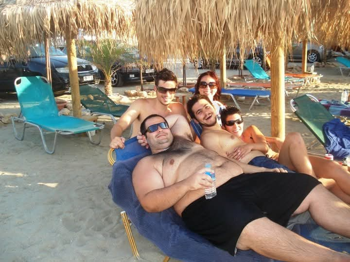
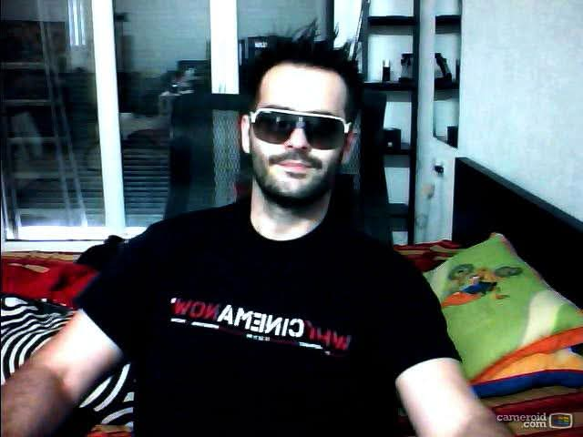
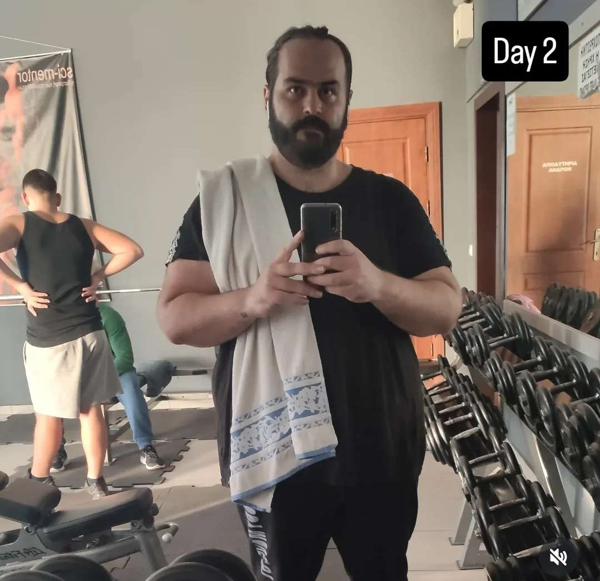
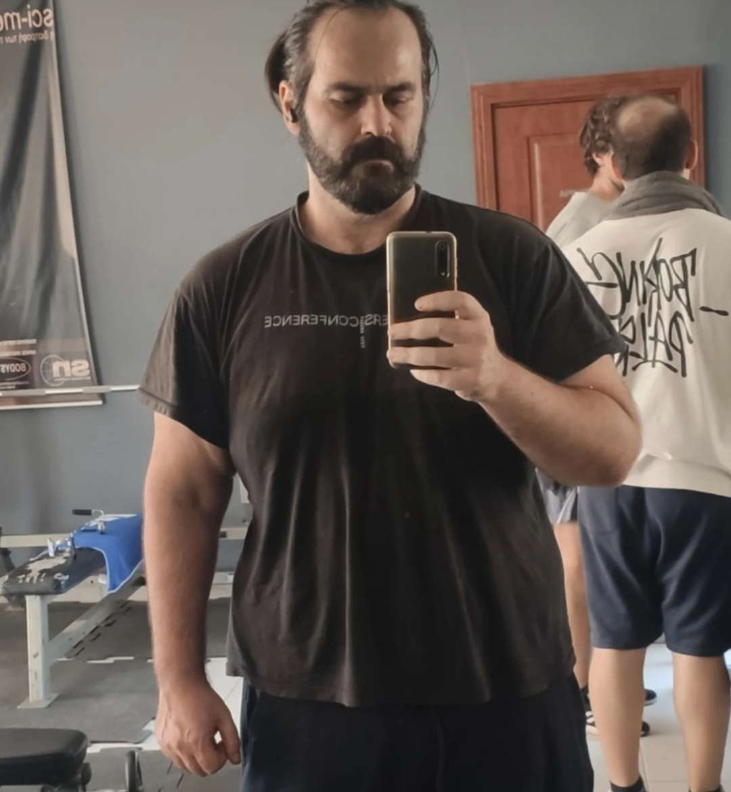

My Story
The honest version, no filter.
A few years ago, I lost a huge amount of weight. It was one of the hardest things I've ever done — and one of the proudest.
But there was a part of the journey I couldn't finish: the excess skin left behind. Skin removal surgery wasn't something I could afford, so I lived with it. Over time, the discomfort — physical and emotional — wore me down, and eventually I regained the weight.
This year, I started again. Not because I failed the first time, but because I learned what was missing. I've lost 40kg so far, and I need to lose 25kg more to reach my goal of 100kg. This time, I'm not planning to stop where I stopped last time.
The surgery is the piece I couldn't afford before, and it's the piece that would let me actually close this chapter instead of watching it repeat. I'm asking for help to cover the cost of skin removal surgery — around €19,000 — so I can finish what I started and stop the cycle for good.
Every donation, share, or kind word helps more than you know. Thank you for being part of this with me.
— Pantelis



